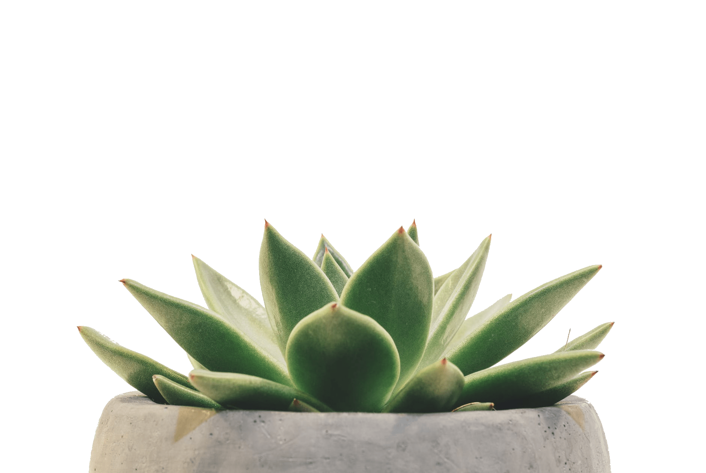

¿Cómo preparar el sustrato ideal para nuestras suculentas? • 3 partes de tierra fértil • 2 partes de arena gruesa • 1 parte de perlitas Opcional: ½ de hummus de lombriz
PLAGAS Una de las plagas más frecuentes en las suculentas son las CONCHILLAS La hembra es la encargada de succionar la savia de la planta mientras que el macho que vuela se encarga de la reproducción. La hembra puede llegar a poner entre 300 a 500 huevos. ¿Por qué aparecen? La aparición de las conchillas puede darse por varias razones. Suelen aparecer cuando nos excedemos en el riego o cuando la planta está enferma, débil o cuando sufre algún estrés normalmente causado por trasplantes mal efectuados o por podas incorrectas. ¿Cómo darnos cuenta que nuestra sucu tiene conchillas? Los primeros cambios que notaremos en nuestra planta es el cambio de color. Se tornan amarillentas y tienden a secarse. Si miramos con cuidado veremos a estas conchillas prendidas en el revés de las hojas o en el tallo. ¿Cómo eliminar esta plaga? Lo primero que debemos hacer es apartar la planta del resto para prevenir contagios. Quitar la mayor cantidad de conchillas con un hisopo con alcohol rebajado con agua. Rociar la planta con agua enjabonada 2 veces por semana. Repetir el rociado 2 veces por mes para prevenir la reaparición.